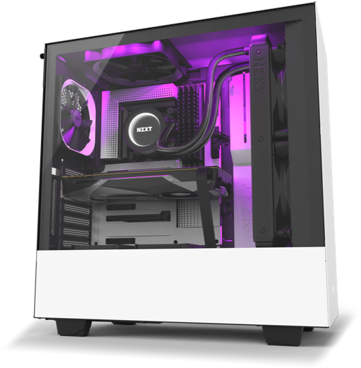
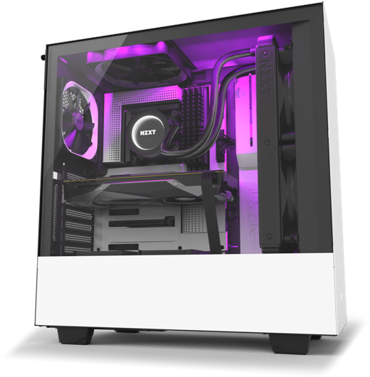

PC
Masterz

PC
Masterz
In today’s world it is important to have a computer and a high functioning one at that. However, the use of your computer may vary depending on your job or hobbies. If you are a casual user that simply uses a computer to surf the web you can get away with a very cheap build raging anywhere from $200 to $500. If you are a programmer and need a computer with heavy processing power you’re going to need a better CPU. If you need to work with servers, you’re going to need a server motherboard. Whatever you are going to use your computer for, it is important to analyze which components are important and which ones aren’t. In the interest of your wallet, make sure to save money any way you can. Here at PC Masterz we help with understanding what parts are good and what makes them good. Why picking the best graphics card is not always the best option.
 

The first step to building a nice PC is to have a vision. Go online and search for some good looking PC builds to get some ideas. As shown above, building a computer is almost like art. You should focus on not only making a strong computer but also on having it look nice. There are crazy amount tools to help with wire management and lighting but that will be covered later.